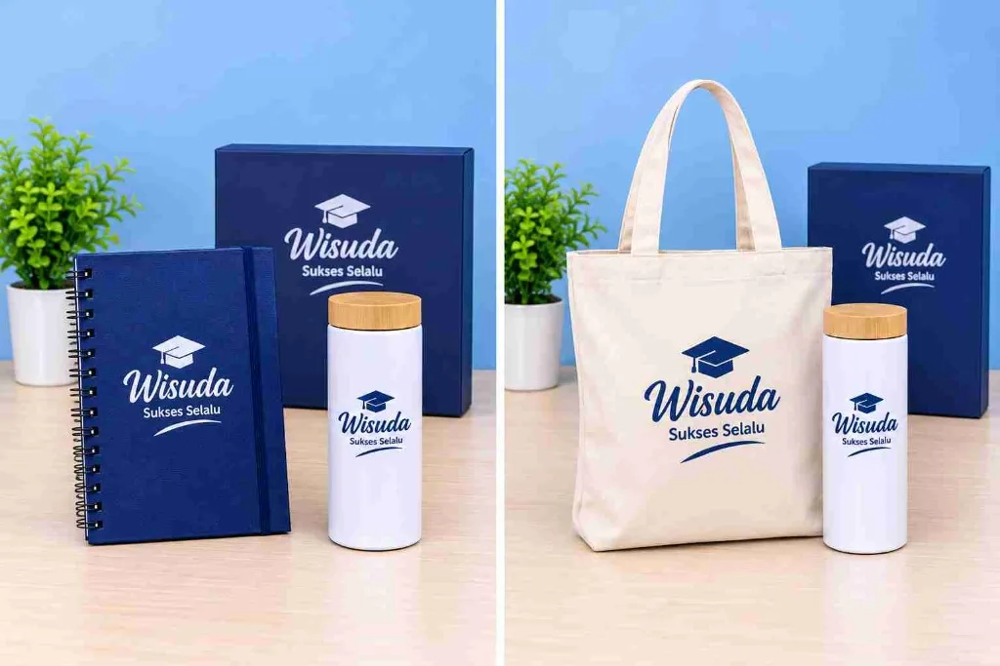

Ide Souvenir Wisuda Murah tapi Tetap Berkesan
Oleh Tim Souvenir_wisuda · Terbit · Diperbarui · 4 menit baca

Hadiah Wisuda untuk Perempuan
Wisuda menjadi salah satu momen istimewa yang patut dirayakan setelah seseorang berhasil menyelesaikan pendidikan. Perjalanan panjang selama belajar tentu menyimpan banyak cerita, mulai dari mengerjakan tugas, menghadapi ujian, hingga akhirnya berhasil mencapai kelulusan.
Untuk merayakan pencapaian tersebut, memberikan hadiah kepada orang terdekat bisa menjadi bentuk perhatian yang sederhana tetapi bermakna. Terlebih jika hadiah diberikan kepada sahabat, pasangan, saudara, atau keluarga perempuan.
Memilih hadiah wisuda untuk perempuan sebenarnya tidak harus sulit. Ada banyak pilihan produk yang bisa disesuaikan dengan kesukaan dan kebutuhan penerima, mulai dari buket bunga, boneka wisuda, tumbler custom, hingga paket souvenir yang dikemas secara menarik.
Jika kamu masih bingung menentukan pilihan, berikut beberapa inspirasi hadiah yang bisa dijadikan referensi.
1. Buket Bunga yang Cantik
Buket bunga merupakan salah satu pilihan hadiah yang sering diberikan saat perayaan wisuda. Bentuknya yang menarik dan pilihan warnanya yang beragam membuat buket cocok untuk melengkapi suasana kelulusan.
Kamu bisa memilih bunga mawar, bunga artificial, atau kombinasi beberapa jenis bunga sesuai kesukaan penerima.
Agar lebih personal, tambahkan kartu ucapan berisi pesan selamat dan harapan baik untuk perjalanan berikutnya.
2. Boneka Wisuda
Boneka wisuda bisa menjadi pilihan bagi perempuan yang menyukai hadiah lucu dan menggemaskan.
Produk ini biasanya memiliki desain menggunakan pakaian toga dan topi wisuda sehingga sesuai dengan tema kelulusan.
Selain diberikan sebagai hadiah, boneka juga bisa disimpan sebagai kenang-kenangan atau dijadikan dekorasi kamar.
Sebelum membeli, perhatikan ukuran, bahan, dan kualitas jahitan agar produk terlihat rapi.
3. Tumbler Custom Nama
Tumbler merupakan hadiah yang memiliki fungsi praktis dalam kehidupan sehari-hari. Produk ini bisa digunakan untuk membawa air minum ketika bekerja, bepergian, atau melakukan berbagai aktivitas.
Agar terlihat lebih istimewa, pilih tumbler dengan tambahan nama, tulisan, atau desain khusus bertema wisuda.
Warna pastel, putih, dan krem bisa menjadi pilihan bagi penerima yang menyukai tampilan sederhana dan minimalis.
4. Hampers Wisuda
Jika ingin memberikan beberapa produk sekaligus, hampers bisa menjadi pilihan yang menarik.
Kamu dapat menggabungkan beberapa barang dalam satu kotak hadiah, seperti mug, tumbler, notebook, snack, atau pouch.
Pilih produk yang memiliki warna senada agar tampilan hampers terlihat lebih rapi. Tambahkan pita dan kartu ucapan sederhana untuk memberikan sentuhan personal.
Isi hampers juga dapat disesuaikan dengan anggaran yang tersedia.
5. Mug Custom dengan Desain Personal
Mug custom merupakan hadiah sederhana yang bisa digunakan dalam aktivitas sehari-hari.
Kamu dapat menambahkan nama penerima, foto, atau tulisan selamat wisuda pada bagian mug. Pilih desain yang sesuai dengan karakter penerima agar hadiah terasa lebih personal.
Selain digunakan untuk minum, mug juga dapat ditempatkan di meja kerja atau dijadikan pajangan.
6. Notebook Estetik
Notebook cocok diberikan kepada perempuan yang senang menulis, mencatat ide, atau membuat perencanaan.
Setelah menyelesaikan pendidikan, buku catatan ini bisa digunakan untuk menulis target pekerjaan, rencana masa depan, maupun kegiatan sehari-hari.
Pilih notebook dengan sampul menarik, ukuran praktis, dan kualitas kertas yang nyaman digunakan.
7. Tas atau Totebag Wanita
Tas merupakan salah satu perlengkapan yang dapat digunakan untuk berbagai aktivitas.
Totebag bisa digunakan untuk membawa buku dan barang pribadi, sedangkan sling bag cocok untuk kegiatan santai maupun bepergian.
Pilih model yang sesuai dengan gaya penerima. Perhatikan juga bahan, ukuran, dan kualitas jahitan sebelum melakukan pembelian.
8. Pouch Makeup
Bagi perempuan yang sering membawa perlengkapan pribadi, pouch makeup bisa menjadi hadiah yang bermanfaat.
Pouch dapat digunakan untuk menyimpan kosmetik, skincare, aksesori, atau barang kecil lainnya agar lebih tertata.
Pilih ukuran yang sesuai dan bahan yang mudah dibersihkan. Desain sederhana dengan warna lembut bisa menjadi pilihan yang menarik.
9. Frame Foto Wisuda
Foto wisuda merupakan kenangan yang biasanya ingin disimpan dalam waktu lama.
Memberikan frame foto bisa menjadi cara sederhana untuk mengabadikan momen tersebut. Kamu dapat memilih bingkai dengan desain minimalis yang cocok ditempatkan di meja atau lemari.
Agar lebih berkesan, masukkan foto bersama penerima hadiah atau foto saat perayaan wisuda berlangsung.
10. Paket Souvenir Wisuda Dua Produk
Paket souvenir dua produk cocok untuk kamu yang ingin memberikan hadiah dengan tampilan lebih lengkap.
Kamu bisa menggabungkan dua jenis barang berbeda dalam satu kotak hadiah sehingga terlihat rapi dan menarik.
Berikut beberapa kombinasi yang bisa dijadikan inspirasi:
- Tumbler dan notebook.
- Mug dan boneka wisuda.
- Pouch dan tumbler.
- Mug dan frame foto.
- Notebook dan pulpen custom.
Pilih produk dengan ukuran yang sesuai agar dapat disusun dengan rapi di dalam kemasan.
Hadiah seperti ini cocok diberikan kepada sahabat, pasangan, maupun saudara perempuan yang sedang merayakan kelulusan.

Tips Memilih Hadiah Wisuda untuk Perempuan
Setelah mengetahui berbagai pilihan hadiah, ada beberapa hal yang sebaiknya diperhatikan sebelum membeli.
1. Kenali Kesukaan Penerima
Setiap perempuan memiliki selera yang berbeda. Ada yang menyukai bunga, boneka, aksesori, atau barang yang lebih praktis.
Dengan mengetahui kesukaannya, kamu bisa memilih hadiah yang lebih sesuai dan tidak asal membeli.
2. Perhatikan Kegunaan Produk
Selain memiliki tampilan menarik, pilih barang yang dapat digunakan kembali setelah acara wisuda selesai.
Contohnya tumbler, notebook, tas, dan pouch yang bisa dimanfaatkan untuk kegiatan sehari-hari.
3. Sesuaikan dengan Anggaran
Tentukan anggaran sebelum membeli hadiah. Tidak perlu memaksakan diri membeli barang mahal karena hadiah sederhana juga bisa memberikan kesan yang baik.
4. Pilih Kemasan yang Menarik
Kemasan dapat membuat hadiah terlihat lebih rapi dan istimewa. Kamu bisa menggunakan kotak hadiah, pita, kertas dekorasi, atau kartu ucapan.
5. Tambahkan Ucapan Personal
Ucapan sederhana dapat membuat hadiah terasa lebih bermakna. Tuliskan doa dan harapan baik untuk perjalanan penerima setelah menyelesaikan pendidikan.
Rekomendasi Hadiah Wisuda Berdasarkan Anggaran
Jika memiliki anggaran tertentu, kamu bisa mempertimbangkan beberapa pilihan berikut:
| Anggaran | Pilihan Hadiah |
|---|---|
| Di bawah Rp50.000 | Mini bouquet, gantungan kunci, mug sederhana |
| Rp50.000–Rp100.000 | Notebook, pouch, mug custom |
| Rp100.000–Rp150.000 | Tumbler, boneka wisuda, buket snack |
| Rp150.000–Rp200.000 | Hampers sederhana, paket souvenir dua produk |
Harga tersebut merupakan perkiraan dan dapat berbeda tergantung bahan, ukuran, desain, serta tempat pembelian.
Di Mana Membeli Hadiah Wisuda untuk Perempuan?
Saat ini, berbagai pilihan hadiah dapat ditemukan melalui toko online maupun toko souvenir secara langsung.
Beberapa tempat yang bisa dipertimbangkan antara lain:
- Marketplace: Memudahkan kamu membandingkan harga, desain, dan ulasan produk.
- Toko souvenir: Cocok untuk melihat produk secara langsung sebelum membeli.
- Toko custom gift: Pilihan tepat jika ingin menambahkan nama atau tulisan khusus.
- Pengrajin lokal: Bisa menjadi alternatif untuk mendapatkan produk dengan desain yang lebih personal.
Sebelum melakukan pemesanan, periksa deskripsi produk, ulasan pembeli, biaya pengiriman, serta estimasi waktu pengerjaan.
Kesimpulan
Memilih hadiah wisuda untuk perempuan tidak harus selalu mahal atau mewah. Ada banyak pilihan yang bisa disesuaikan dengan kesukaan dan kebutuhan penerima, mulai dari buket bunga, boneka wisuda, tumbler custom, mug, hingga paket souvenir dua produk.
Hal terpenting adalah memilih hadiah yang sesuai dan memberikan perhatian melalui sesuatu yang memiliki makna.
Dengan kemasan yang menarik serta tambahan ucapan personal, hadiah sederhana pun bisa menjadi kenangan indah yang mengingatkan seseorang pada momen kelulusannya.
Kunci souvenir wisuda yang berkesan
Nilai sebuah souvenir bukan dari harganya, tetapi dari rasa personalnya. Nama, tanggal, dan logo kampus membuat barang sederhana terasa istimewa dan layak disimpan bertahun-tahun.
Ide souvenir hemat budget
- Boneka wisuda mini berbusana toga
- Plakat atau frame kecil dengan foto dan ucapan
- Buket mini dari boneka atau bunga artifisial
- Hampers kecil berisi 2–3 item pilihan
- Kartu ucapan dengan kemasan manis
Cara menghemat tanpa mengurangi kesan
Kecilkan ukuran, bukan kualitas. Gunakan satu warna tema agar tampilan seragam. Pesan dalam jumlah lebih banyak jika ada teman satu angkatan, karena harga per pcs biasanya lebih ringan. Pesan lebih awal supaya tidak perlu biaya percepatan.
Kapan sebaiknya memesan
Mulailah memesan beberapa minggu sebelum hari wisuda agar ada waktu untuk revisi desain dan produksi. Tanyakan estimasi pengerjaan saat menghubungi kami lewat WhatsApp.
Rekomendasi paket
Paket Boneka Wisuda
Boneka berbusana toga dengan nama, tanggal, dan logo kampus.
Lihat Paket Tanya via WhatsAppFAQ
Apakah souvenir murah bisa tetap dikustom?
Bisa. Kustom nama, tanggal, dan logo umumnya tetap tersedia pada produk berukuran kecil.
Berapa budget yang ideal?
Tergantung jumlah dan jenis produk. Sampaikan budget Anda via WhatsApp dan kami bantu pilihkan paket yang sesuai.
Tentang penulis
Tim Souvenir_wisuda adalah pembuat souvenir wisuda custom yang melayani pesanan perorangan, sekolah, dan kampus. Kenali kami.